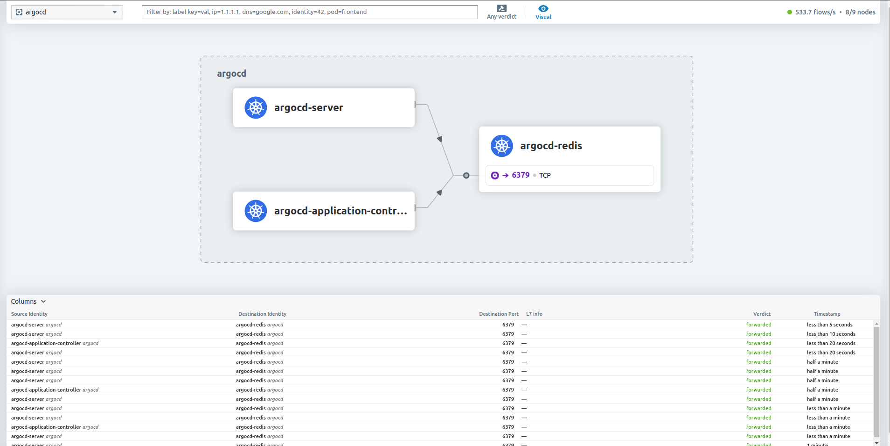
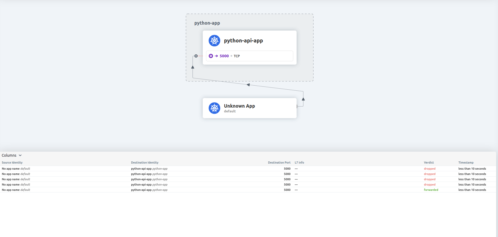

In the second part, I will talk about Container network interface (CNI), Cilium CNI and some compare with Network policies and Cilium network policies.
CNI
What is CNI:
- Is a framework for configuring network interfaces in Linux containers, providing connectivity, and ensuring network isolation.
- CNI Plugin standardizes and simplifies Kubernetes networking.
How CNI Works:
- CNI works by invoking a network plugin that handles network configuration for containers. When a container is created, the container runtime calls the CNI plugin to set the container network interface.
- Works in K8S:
Kube API --> Kubelet --> Container Runtime --> create container, network namespace
--> invoke CNI, create network configuration for veth then map it with container network
CNI specification:
- A Json configuration file that specifies the desired network setup.
- Standard commands: ADD, DEL, CHECK to manage network interfaces.
- The plugin must handle these commands and return results in a predefined format.
CNI community popularity:
The following table summarizes different GitHub metrics to give you an idea of each project's popularity and activity levels. This data was collected in December 2024.
| Provider | Stars | Forks | Contributors |
|---|---|---|---|
| Canal | 718 | 100 | 20 |
| Flannel | 8.9k | 2.9k | 234 |
| Calico | 6.1k | 1.4k | 360 |
| Weave | 6.6k | 672 | 84 |
| Cilium | 20.5k | 3k | 868 |
Cilium CNI
What is Cilium
Cilium is an open-source networking and security solution designed for Kubernetes and other container orchestration platforms. Its primary purpose is to provide secure and efficient network connectivity between application services deployed in cloud-native environments. Cilium leverages eBPF (extended Berkeley Packet Filter) technology to dynamically insert code into the Linux kernel, enabling high-performance packet processing and security enforcement.
As a CNI (Container Network Interface) plugin, Cilium offers advanced networking features, robust security policies, and deep observability capabilities. These features make it an ideal choice for modern cloud-native applications that require scalable and secure network infrastructure.
Key Features
-
eBPF Cilium uses eBPF to dynamically insert code into the Linux kernel, enabling efficient packet processing and security enforcement.
-
Network Policies Cilium implements Kubernetes Network Policies and extends them with more advanced features, allowing fine-grained control over network traffic.
-
Service Mesh Integration Cilium integrates seamlessly with service meshes like Istio, providing enhanced networking capabilities and security. ( right now i have no idea about this. xD)
-
Observability Cilium offers robust observability features through
Hubble, which provides deep visibility into network traffic and security events.
eBPF explain
I think you haven't understood clearly about eBPF (so am i), so i tried to spend time reading the document, trying to understand it and explain it here xD.
1. Think of it as a plugin system for the kernel that can help with monitoring, networking, and security:
- Observe: Watch what’s happening inside the system (e.g., track network packets, file operations, etc.).
- Act: Modify or filter data in real time (e.g., drop a suspicious network packet).
2. Why is it useful?:
Normally, to add new functionality to the Linux kernel, you'd have to rebuild or modify the kernel—a risky and complex task. eBPF solves this by: - Letting you "inject" tiny programs dynamically. - Running these programs in a safe sandbox to ensure they can’t crash or harm the system. - Being fast because the programs run directly inside the kernel.
3. Simple Analogy: Imagine the Linux kernel is a busy post office:
- Every day, it processes letters (network packets, file reads, system events).
- If you wanted to filter out spam mail (e.g., suspicious packets), you'd normally need to rewrite the post office's internal processes (modify the kernel).
- But with eBPF, you can simply write a small "mailroom plugin" that works alongside the post office to filter spam as the letters pass through without changing how the post office works.
4. Example: Network Packet Filtering. Let’s say you want to block network packets coming from a suspicious IP address.
- Without eBPF:
- You might need to install complex tools or write custom firewall rules.
- Or, you’d need to modify the kernel, which is risky.
- With eBPF:
- You write a small eBPF program in C or a high-level language like Python (with libraries like bcc or libbpf).
- This program runs inside the kernel and checks every network packet:
- If the packet’s source IP matches the bad one, the program drops it.
- Otherwise, it lets the packet through.
- You load the eBPF program dynamically using tools like bpftool.
5. Additional example of how network packet filter:
I think i need some example code for easier imagination, the same method which i used to better understand the issue.
- Install required for Debian-based system:
sudo apt-get install bpfcc-tools linux-headers-$(uname -r)
sudo apt-get install python3-bpfcc
- Write the eBPF Program: Create a file called filter.c containing the eBPF program. This program checks the destination port of each packet and drops packets destined for port 3306.
#include <uapi/linux/bpf.h>
#include <uapi/linux/if_ether.h>
#include <uapi/linux/ip.h>
#include <uapi/linux/tcp.h>
int drop_port_3306(struct __sk_buff *skb) {
// Get the Ethernet header
struct ethhdr *eth = bpf_hdr_pointer(skb);
if (!eth) return 0;
// Check if the packet is an IP packet
if (eth->h_proto != htons(ETH_P_IP)) return 0;
struct iphdr *ip = bpf_hdr_pointer(skb, sizeof(*eth));
if (!ip) return 0;
// Check if the packet is a TCP packet
if (ip->protocol != IPPROTO_TCP) return 0;
struct tcphdr *tcp = bpf_hdr_pointer(skb, sizeof(*eth) + sizeof(*ip));
if (!tcp) return 0;
// Check if the destination port is 3306
if (tcp->dest == htons(3306)) {
// Drop the packet
return TC_ACT_SHOT;
}
// Allow the packet
return TC_ACT_OK;
}
- Load and Attach the eBPF Program: Create a Python script filter.py that uses the bcc library to load and attach the eBPF program to the network interface.
from bcc import BPF
# Load the eBPF program from the C file
b = BPF(src_file="filter.c", cflags=["-w"])
function_skb = b.load_func("drop_port_3306", BPF.SCHED_CLS)
# Attach the eBPF program to the network interface (e.g., eth0)
INTERFACE = "eth0"
b.attach_skb_filter(function_skb, INTERFACE)
print(f"eBPF program loaded and attached to {INTERFACE}.")
print("Dropping packets destined for port 3306...")
try:
b.trace_print()
except KeyboardInterrupt:
print("Detaching program and exiting...")
b.remove_skb_filter(function_skb, INTERFACE)
-
Explanation:
- filter.c: This file contains the eBPF program written in C. It checks if the packet is an IP packet and a TCP packet. It then checks if the destination port is 3306 and drops the packet if true.
- filter.py: This Python script uses the bcc library to load the eBPF program from filter.c and attach it to a network interface (e.g., eth0). The trace_print function prints trace messages until the program is interrupted
-
Running the Program:
- Save the eBPF program in a file named filter.c.
- Save the Python script in a file named filter.py.
- Run the Python script using:
sh sudo python3 filter.pyThis will load the eBPF program and attach it to the specified network interface (eth0), dropping any packet destined for port 3306.
P/s: This is generated from Copilot xD, but it should give an idea of why eBPF is strong and useful.
Cilium eBPF
- First, i think you need to check if Cilium is enabled in hybrid mode or strict mode or not
kubectl -n kube-system edit configmap cilium-config
Looks for line kube-proxy-replacement, if it is empty (""), it is running in hybrid mode and you can see by type iptables -L. Enable it with
kube-proxy-replacement: strict
kube-proxy-replacement-healthz-bind-address: ""
enable-l7-proxy: "true"
-
Second, check kernel support or not: Cilium generally requires a kernel version >= 4.19 for basic eBPF functionality and >= 5.4 for kube-proxy replacement. So it will mostly be about supported xD
-
Third, let's focus on the main objective.
- Cilium with eBPF is generally faster than iptables. eBPF (extended Berkeley Packet Filter) allows Cilium to dynamically insert code into the Linux kernel, enabling efficient packet processing and security enforcement. This approach reduces the overhead associated with traditional iptables-based packet filtering and routing.
- Iptables operate in user space and rely on a series of rules to manage network traffic, which can become complex and slow as the number of rules increases. In contrast, eBPF operates in the kernel space, allowing for more direct and efficient handling of network packets. This results in lower latency and higher throughput, making Cilium with eBPF a more performant solution for Kubernetes networking.
- Examples of how Cilium utilizes eBPF: Load Balancing
- Use Case: Cilium implements a high-performance, distributed load balancer for Kubernetes services
- eBPF Functionality:
- eBPF programs attached to networking hooks can direct packets to the correct backend pod without relying on iptables.
- Example: A packet arriving for ClusterIP is intercepted by an eBPF program, which selects a pod backend based on a consistent hash algorithm and forwards the packet directly.
More examples can be found here: replacing_iptables_with_ebpf
Common commands of the cilium
cilium-health status
cilium status
Cilium Observability: Hubble
- There are many ways to enable Hubble and Hubble UI, so i won't talk details here.
- View network flows in real-time:
hubble observe - Port forward to use Hubble UI:
kubectl port-forward -n kube-system svc/hubble-ui 12000:80 -
As you can see, very useful for Observability, debugging, and tracing!, even more, it shows which packets get dropped so we can have an idea of where to check, at this point, it is caused by CNP (Cilium Network Policy). 
-
For CLI mode which i prefer for debugging xD
# Show full info with follow
hubble observe -f
Jan 23 09:14:11.844: 10.42.2.237:45738 (remote-node) <> cattle-monitoring-system/rancher-monitoring-prometheus-adapter-67bc4c68b6-v4txm:6443 (ID:45221) to-overlay FORWARDED (TCP Flags: ACK, PSH)
Jan 23 09:14:11.844: 10.42.2.237:45738 (host) -> cattle-monitoring-system/rancher-monitoring-prometheus-adapter-67bc4c68b6-v4txm:6443 (ID:45221) to-overlay FORWARDED (TCP Flags: ACK, PSH)
Jan 23 09:14:11.844: 10.0.0.1:59934 (host) -> 10.0.0.2:8472 (remote-node) to-network FORWARDED (UDP)
# Filter for specific from pod: hubble observe --from-pod <namespace>/<pod-name>.
# But it doesn't show packet is dropped duo Cilium network policy (continue read and you will see)
Jan 23 09:36:09.436: default/kienlt-linux-tools:39036 (ID:46060) -> kube-system/rke2-coredns-rke2-coredns-565dfc7d75-78ql9:53 (ID:8648) policy-verdict:all INGRESS ALLOWED (UDP)
Jan 23 09:36:09.436: default/kienlt-linux-tools:39036 (ID:46060) -> kube-system/rke2-coredns-rke2-coredns-565dfc7d75-78ql9:53 (ID:8648) to-endpoint FORWARDED (UDP)
Jan 23 09:36:09.436: default/kienlt-linux-tools:39036 (ID:46060) <> kube-system/rke2-coredns-rke2-coredns-565dfc7d75-78ql9 (ID:8648) pre-xlate-rev TRACED (UDP)
Jan 23 09:36:09.436: default/kienlt-linux-tools:39036 (ID:46060) <> kube-system/rke2-coredns-rke2-coredns-565dfc7d75-78ql9 (ID:8648) pre-xlate-rev TRACED (UDP)
Jan 23 09:36:09.440: default/kienlt-linux-tools:54729 (ID:46060) -> kube-system/rke2-coredns-rke2-coredns-565dfc7d75-78ql9:53 (ID:8648) policy-verdict:all INGRESS ALLOWED (UDP)
Jan 23 09:36:09.440: default/kienlt-linux-tools:54729 (ID:46060) -> kube-system/rke2-coredns-rke2-coredns-565dfc7d75-78ql9:53 (ID:8648) to-endpoint FORWARDED (UDP)
Jan 23 09:36:09.440: default/kienlt-linux-tools:54729 (ID:46060) <> kube-system/rke2-coredns-rke2-coredns-565dfc7d75-78ql9 (ID:8648) pre-xlate-rev TRACED (UDP)
Jan 23 09:36:09.440: default/kienlt-linux-tools:54729 (ID:46060) <> kube-system/rke2-coredns-rke2-coredns-565dfc7d75-78ql9 (ID:8648) pre-xlate-rev TRACED (UDP)
Cilium Network policies
Comparison
- Kubernetes Network Policies: Kubernetes network policies are used to control the traffic between pods. They are defined using the NetworkPolicy resource.
apiVersion: networking.k8s.io/v1
kind: NetworkPolicy
metadata:
name: allow-nginx
namespace: default
spec:
podSelector:
matchLabels:
app: nginx
policyTypes:
- Ingress
- Egress
ingress:
- from:
- podSelector:
matchLabels:
app: frontend
ports:
- protocol: TCP
port: 80
egress:
- to:
- podSelector:
matchLabels:
app: backend
ports:
- protocol: TCP
port: 8080
- Cilium Network Policies: Cilium extends the capabilities of Kubernetes network policies by leveraging eBPF. Cilium policies can be more expressive and can include L7 (Layer 7) rules.
apiVersion: cilium.io/v2
kind: CiliumNetworkPolicy
metadata:
name: allow-nginx
namespace: default
spec:
endpointSelector:
matchLabels:
app: nginx
ingress:
- fromEndpoints:
- matchLabels:
app: frontend
toPorts:
- ports:
- port: "80"
protocol: TCP
egress:
- toEndpoints:
- matchLabels:
app: backend
toPorts:
- ports:
- port: "8080"
protocol: TCP
- toServices:
- k8sService:
namespace: default
serviceName: external-service
l7Rules:
http:
- method: GET
path: "/api"
The above is just an example xD, and CiliumNetworkPolicy may not work because i copied somewhere for the content. For a real example, let's continue to read below xDD.
- Key Differences:
- Layer 7 Policies: Cilium supports L7 policies (e.g., HTTP methods and paths), while Kubernetes network policies are limited to L3/L4 (IP and port).
- Integration with eBPF: Cilium uses eBPF for efficient packet processing, which can provide better performance and more advanced features.
A real example of Cilium Network policies
- Before I'm able to write this, i wasted 3-4 hours for checking and testing why we can't have rules that allow both allow/deny. Simply it doesn't support >.>
Cilium L7 policies do not directly support explicit deny rules for specific HTTP paths or methods at the moment. Instead, they operate on an allowlist-only model, meaning:
1. Any traffic explicitly defined in rules.l7 is allowed.
2. Any traffic not explicitly listed is denied by default.
This can feel limiting when you're looking for explicit deny functionality. However, there are ways to handle this situation effectively depending on your use case.
- Real Example: Rule that allows access only path /employees from namespace
testto namespacepython-app
apiVersion: "cilium.io/v2"
kind: CiliumNetworkPolicy
metadata:
name: "python-app"
namespace: "python-app"
# Apply this in the namespace you want to protect
spec:
# Target all pods in the namespace where this policy is applied
endpointSelector: {} # Apply this policy to all pods in the python-app namespace
ingress:
# Allow all traffic from pods in test namespace
- fromEndpoints:
- matchLabels:
# This matches all pods in the test namespace
k8s:io.kubernetes.pod.namespace: test
toPorts:
- ports:
- port: "5000"
protocol: TCP
rules:
http:
- method: "GET"
path: "/employees.*"
- Lets go for testing, if the path is simple path: "/employees". The request to python-api-app-production.python-app.svc:5000/employees/1 will be denied!
### Access from namespace test
k exec -n test kienlt-linux-tools -- curl -s "python-api-app-production.python-app.svc:5000/employees"
[{"id":1,"name":"Ashley"},{"id":2,"name":"Kate"},{"id":3,"name":"Joe"}]
k exec -n test kienlt-linux-tools -- curl -s "python-api-app-production.python-app.svc:5000/secret"
Access denied
k exec -n test kienlt-linux-tools -- curl -s "python-api-app-production.python-app.svc:5000/"
Access denied
k exec -n test kienlt-linux-tools -- curl -s "python-api-app-production.python-app.svc:5000/employees/1"
{"id":1,"name":"Ashley"}
### Access from namespace default
k exec kienlt-linux-tools -- nc -w 3 -vz python-api-app-production.python-app.svc 5000
nc: python-api-app-production.python-app.svc (10.43.67.70:5000): Operation timed out
command terminated with exit code
Specials thanks to isovalent.com for the tutorials xD ( included reference link below)
Conclusion
- I had a little hard time understanding, but in the end, mostly i got it at some percent xD.
- K8S is complicated, understand a small part will lead to a bigger part. Just don't give up, keep going!
- Learning with ChatGPT and Copilot is faster than doing research with only yourself!
Reference:
- https://ranchermanager.docs.rancher.com/
- https://docs.cilium.io/en/stable/overview/intro/
- https://cilium.io/blog/2018/04/17/why-is-the-kernel-community-replacing-iptables/
- replacing_iptables_with_ebpf
- https://isovalent.com/blog/post/tutorial-cilium-network-policy/